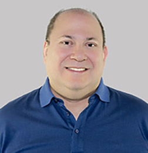
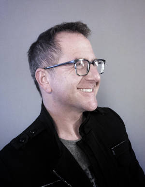

Patient Soothe was founded by Dr. Naomi Zuckerman, DDS and Tracy Warner, RDA. Their goal was to find a simple and cost-effective way to help keep patients calm while waiting in doctor’s offices for care. They observed that less anxious clients make for better patient relations and outcomes. Upon further research, Dr. Zuckerman and Mrs. Warner found an abundance of scientific evidence that supports watching specific fish in certain situations is relaxing and can raise patient’s pain thresholds for up to 30 minutes post-viewing. This is a noteworthy revelation, and one that is definitely an asset to any practitioner. The pair also found studies that indicate hi-definition video fish were MORE effective than a real aquarium.
Dr. Zuckerman and Mrs. Warner understand the need for having alternative measures to relax patients due to more stringent polices set forth by the DEA and various medical boards. They enlisted their friend Howard Lefkowitz, former television executive, Vice President of Earthlink, president of Home Shopping telemedia company, CEO of Vegas.com, and chief revenue of Row 44. Mr. Lefkowitz has been in streaming video and ecommerce for decades. He is personally responsible for the first cybercast live from the White House and the television products that are deployed on Southwest Airlines, Norwegian Air, and other airlines around the globe.
Also on the Patient Soothe team in behaviorist Gino Yu, PHD. Dr. Yu is a globally known behaviorist specifically involved in consciousness, addiction and multimedia. Dr. Yu has worked with nearly every video game company around the world. He received his BS and PhD at the University of California at Berkeley in 1987 and 1993 respectively, where he helped to establish the Center for Enhanced Learning Technologies. In 1999, he established the Multimedia Innovation Centre at the Hong Kong Polytechnic University (PolyU), a leading edge think tank and research center on digital entertainment and its effects on consciousness and addition. He is currently an Associate Professor and Director of Digital Entertainment and Game Development in the School of Design at PolyU where he founded M-Lab, a commercial digital entertainment entity. He hosted many events including TEDxHongKong, Wikimania, Toward a Science of Consciousness, and Meaningful Media.
Craig Allen, is known for, among other things, creating the first CALL OF DUTY for consoles and developing the game plan for what would become a billion dollar franchise.

Mr. Allen served as EVP and GM of Jim Henson Interactive where he formed global strategic partnerships, created the first Muppet video games, and relaunched Henson.com.
Craig started his digital media career as member of the founding team for Disney Software in the early 90s where he was the Senior Producer of numerous award-winning video games generating hundreds of millions of dollars in revenues.
He is currently working on a robotics project to create play-with-a-purpose activities that promote positive social emotional development. He has advised international clients on how intelligent design can be used to increase user engagement, and promote positive behavior changes.
Craig is a graduate of USC and an avid scuba diver.
The hi-def videos deployed by Patient Sooth are shot with maximum therapeutic benefit in mind. Certain types and colors of fish, in certain light, and with groupings have been created with new videos always coming in. These are shot all over the world.
The Patient Soothe team has created a world-class product to help calm patients and make clinical practices less stressful for the doctors as well.